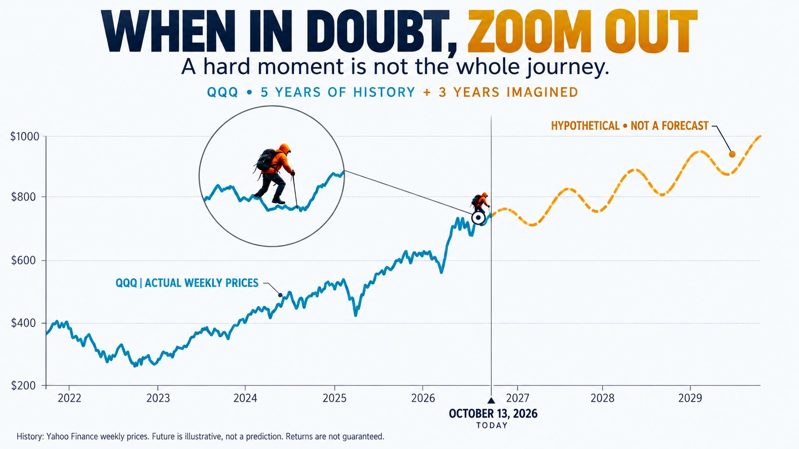

监测牛市转向，关注市场趋势的变化。
本栏目正在筹备，目前仅为占位，尚未启用监测或发布预警信号。

prediction.html
每个交易日收盘后更新：用价格、成交量、RSI 和 VXN 识别“上升趋势中的恐慌出清”买点，2001 年以来回测验证；近五个月买点标注、期权链解读与未来走势投影。
sector_trend.html
12 个板块（行业 ETF）7/17→10/19 的每日累计涨跌幅叠在一张图上，附区间排名、每个板块的前 5 大持仓和日收盘价小图。
reports/trump_and_stock/
30条关键发言标在QQQ日线上：“翻倍论”“道指10万”“现在是买入的好时机”，以及说完之后20天、60天的走势。
26场采访与讲话、55个视频：“没有特朗普看跌期权”“回调是健康的”，以及“供应链安全与股指同样重要”。
reports/top_100_Nasdaq_evolution/
标普500市值前100，2021→2026：谁走谁来、钱流向哪里、排名轨迹、头部集中度，以及逐年播放的排名板。
三个时期前100公司的涨跌分布。
QQQ 价格走势与三段行情对照。
2021—2026 大盘股名单演变。